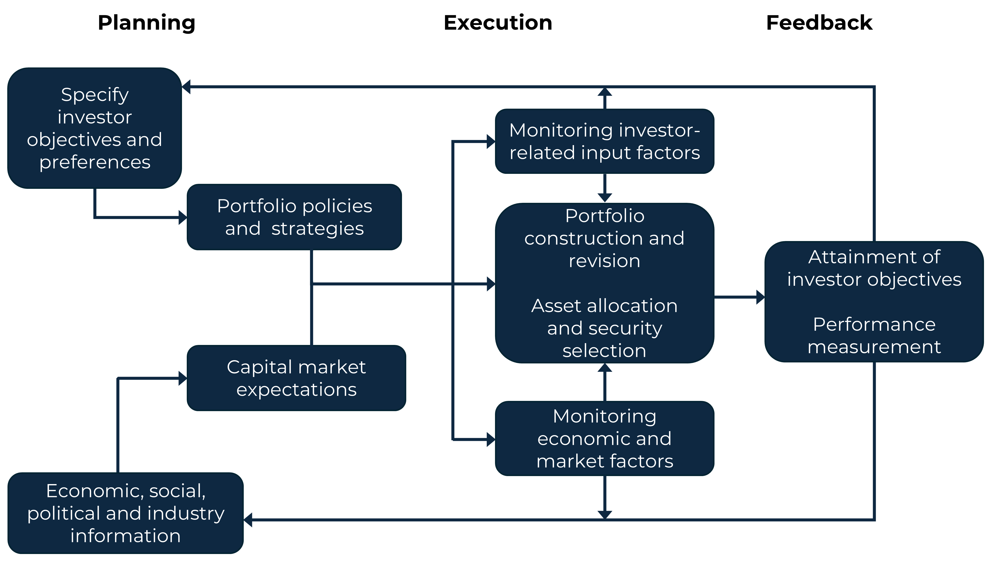

The Investment Management Process
FIN 223 Lecture 1
Andrew Ainsworth
University of Wollongong
Lecture outline
- The role of financial markets in the economy
- The investment management process
- Planning
- Execution
- Feedback
- What is your investment philosophy?
- Practical considerations when establishing your investment process
Financial markets and the economy
- A key motivation for investing is to transfer consumption to the future
- Reduce current consumption for greater future consumption
- Use financial securities to store and grow wealth
- Allocation of risk
- Different asset classes have different levels of risk (e.g. debt vs equity)
- Investors can choose assets that aligns with their risk tolerance
- Informational role of financial markets
- Capital should flow to companies with the best prospects
- If so, market prices should reflect this information
- Separation of ownership and management
- Can lead to agency problems as managers might not act in the best interest of owners (i.e. shareholders)
The investment management process
- Planning
- Identify investment objectives and constraints
- Develop expectations about financial markets
- Create strategic asset allocation (if needed)
- Execution
- What are the weights in different securities?
- Asset allocation
- Security selection
- Implement the trades in markets
- Feedback
- Monitor all sources of information relevant to your portfolio
- Rebalance security weights
- Evaluate the performance of your portfolio
The investment management process
Source: Bodie, Kane and Marcus (2022)
Investment philosophy
- Identifies what your fund’s basic principles of investing are
- It directs your analysis and the generation of investment ideas
- The investment philosophy avoids your fund making ad hoc investment decisions
There are four key components of an investment philosophy:
- Statement of beliefs about the markets
- Statement of beliefs about the opportunities to create value
- Statement of beliefs about the group’s abilities
- Statement of beliefs about the group’s ability to exploit the opportunities to create value
Components of investment philosophy
- Statement of beliefs
- What do you believe about the Australian equity market?
- Is it efficient? If not, what drives these inefficiencies?
- This statement can be quite general
- This statement should be externally focussed
- Statement of opportunities
- This follows from the statement of beliefs
- What opportunities are available that you can exploit to add value?
- This statement is more specific
- What are the sources of alpha?
- Diversification, risk management, etc?
- This statement should be externally focussed
Components of investment philosophy
- Statement of ability
- What capabilities do you have individually and collectively that will allow you to take advantage of the opportunities to add value?
- Do you have a competitive advantage?
- This statement should be internally focussed
- Statement of value
- Can be separate or incorporated into the Statement of Ability
- What is the expected benefit of the investment approach?
- What do you expect to happen if you follow the investment philosophy?
Investment process considerations
- What are the objectives of your fund?
- Are there specific return requirements?
- What is the risk tolerance of the investors in your fund?
- Constraints facing funds
- What is the eligible investment universe?
- What are the liquidity needs of investors?
- How long is the investment horizon of the fund?
- Are there unique needs of investors
- Are any screens applied (e.g. socially responsible investing)?
- Methods
- What methods are you going to use to construct the portfolio and choose the portfolio weights?
- How is rebalancing undertaken?
- Will you use a top-down or bottom-up approach or some combination of the two?
Fidelity Australian Equities Fund
Conclusion
- The goal of the lecture is to introduce you to the investment process
- There are many choices that you need to make when establishing your investment process and investment philosophy
- It’s now over to you to start developing the investment process of your fund
- Next week’s topic: Investor Decision Making